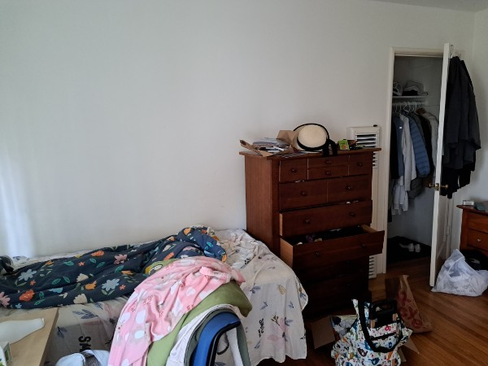
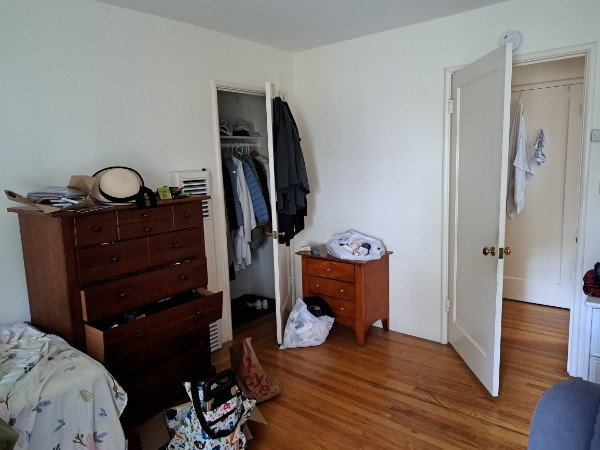
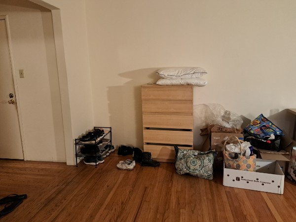
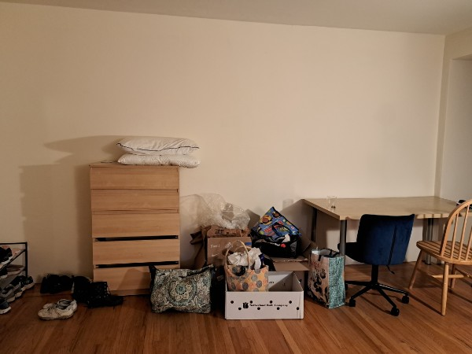
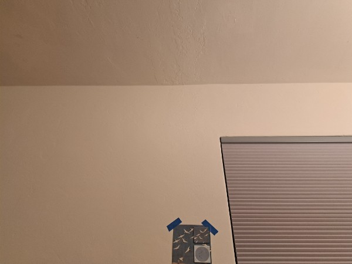
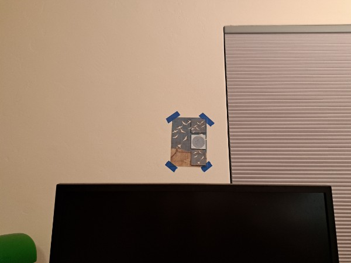
A =
1.14e+02 2.60e+02 1.00e+00 0.00e+00 0.00e+00 0.00e+00 0.00e+00 0.00e+00
5.80e+01 4.79e+02 1.00e+00 0.00e+00 0.00e+00 0.00e+00 0.00e+00 0.00e+00
3.07e+02 2.51e+02 1.00e+00 0.00e+00 0.00e+00 0.00e+00 -6.14e+04 -5.02e+04
3.04e+02 4.79e+02 1.00e+00 0.00e+00 0.00e+00 0.00e+00 -6.08e+04 -9.58e+04
0.00e+00 0.00e+00 0.00e+00 1.14e+02 2.60e+02 1.00e+00 0.00e+00 0.00e+00
0.00e+00 0.00e+00 0.00e+00 5.80e+01 4.79e+02 1.00e+00 -1.16e+04 -9.58e+04
0.00e+00 0.00e+00 0.00e+00 3.07e+02 2.51e+02 1.00e+00 0.00e+00 0.00e+00
0.00e+00 0.00e+00 0.00e+00 3.04e+02 4.79e+02 1.00e+00 -6.08e+04 -9.58e+04
b =
0 0 200 200 0 200 0 200
H =
1.75136589e+00 4.47837853e-01 -3.16093553e+02
8.81716369e-02 1.89079177e+00 -5.01657427e+02
4.40858185e-04 2.12976859e-03 1.00000000e+00
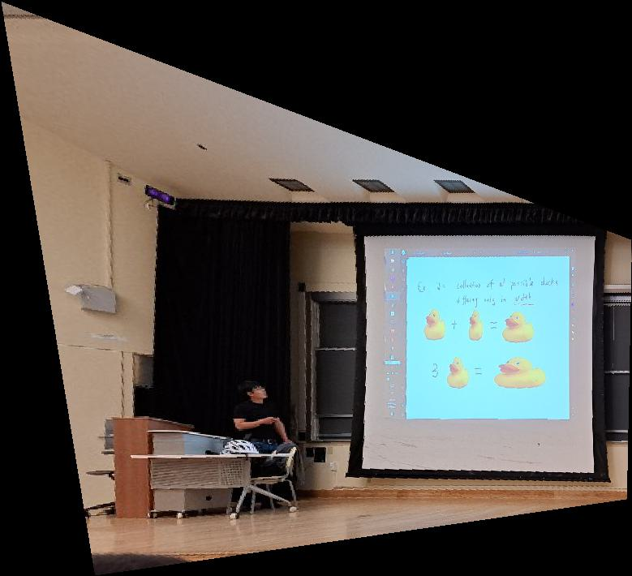
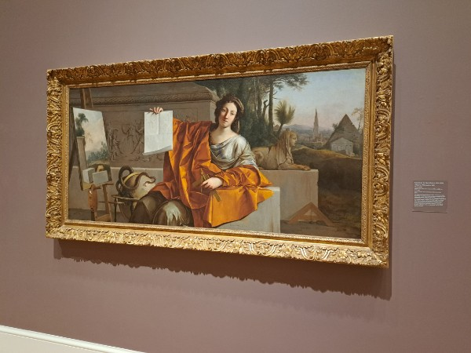
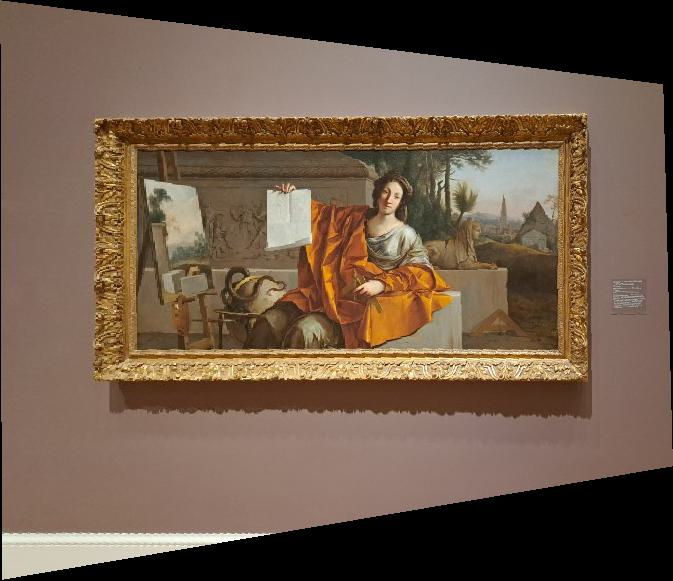
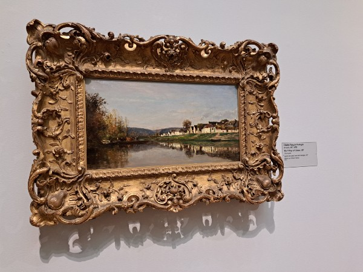
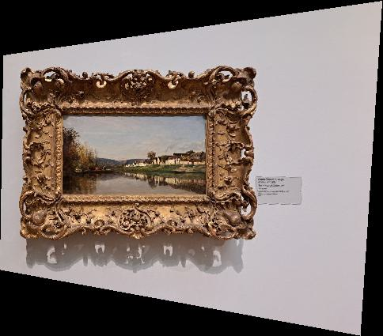
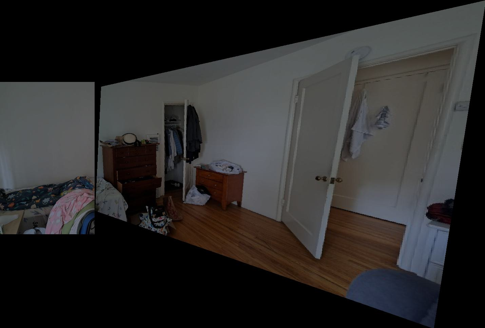
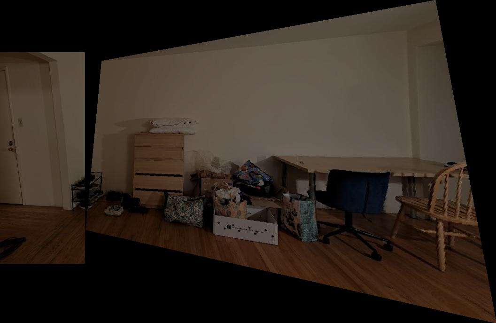
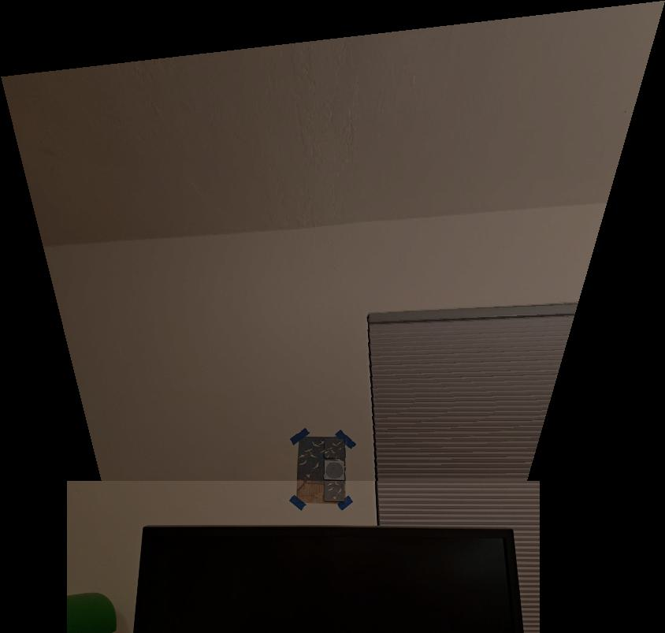